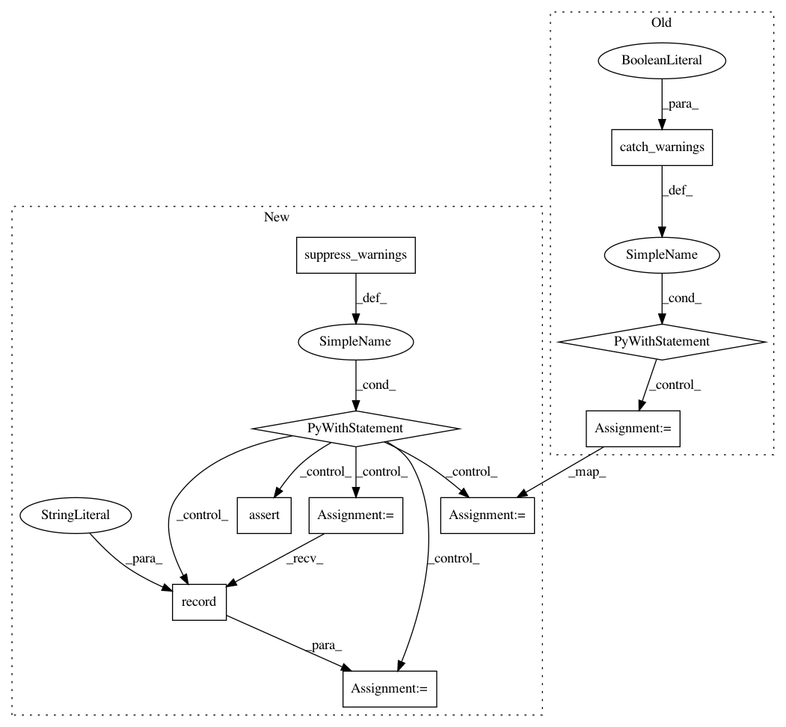

88f18876dd8336c85ee842154efe574ea1fd927f,scipy/interpolate/tests/test_fitpack2.py,TestLSQBivariateSpline,test_integral,#TestLSQBivariateSpline#,227
Before Change
s = 0.1
tx = [1+s,3-s]
ty = [1+s,3-s]
with warnings.catch_warnings(record=True): // coefficients of the ...
lut = LSQBivariateSpline(x,y,z,tx,ty,kx=1,ky=1)
tx, ty = lut.get_knots()
tz = lut(tx, ty)
trpz = .25*(diff(tx)[:,None]*diff(ty)[None,:]
* (tz[:-1,:-1]+tz[1:,:-1]+tz[:-1,1:]+tz[1:,1:])).sum()
After Change
s = 0.1
tx = [1+s,3-s]
ty = [1+s,3-s]
with suppress_warnings() as sup:
r = sup.record(UserWarning, "\nThe coefficients of the spline")
lut = LSQBivariateSpline(x, y, z, tx, ty, kx=1, ky=1)
assert_equal(len(r), 1)
tx, ty = lut.get_knots()
tz = lut(tx, ty)
trpz = .25*(diff(tx)[:,None]*diff(ty)[None,:]
* (tz[:-1,:-1]+tz[1:,:-1]+tz[:-1,1:]+tz[1:,1:])).sum()
In pattern: SUPERPATTERN
Frequency: 3
Non-data size: 10
Instances
Project Name: scipy/scipy
Commit Name: 88f18876dd8336c85ee842154efe574ea1fd927f
Time: 2017-06-26
Author: sebastian@sipsolutions.net
File Name: scipy/interpolate/tests/test_fitpack2.py
Class Name: TestLSQBivariateSpline
Method Name: test_integral
Project Name: scipy/scipy
Commit Name: 88f18876dd8336c85ee842154efe574ea1fd927f
Time: 2017-06-26
Author: sebastian@sipsolutions.net
File Name: scipy/interpolate/tests/test_fitpack2.py
Class Name: TestLSQBivariateSpline
Method Name: test_empty_input
Project Name: scipy/scipy
Commit Name: 88f18876dd8336c85ee842154efe574ea1fd927f
Time: 2017-06-26
Author: sebastian@sipsolutions.net
File Name: scipy/interpolate/tests/test_fitpack2.py
Class Name: TestLSQBivariateSpline
Method Name: test_linear_constant